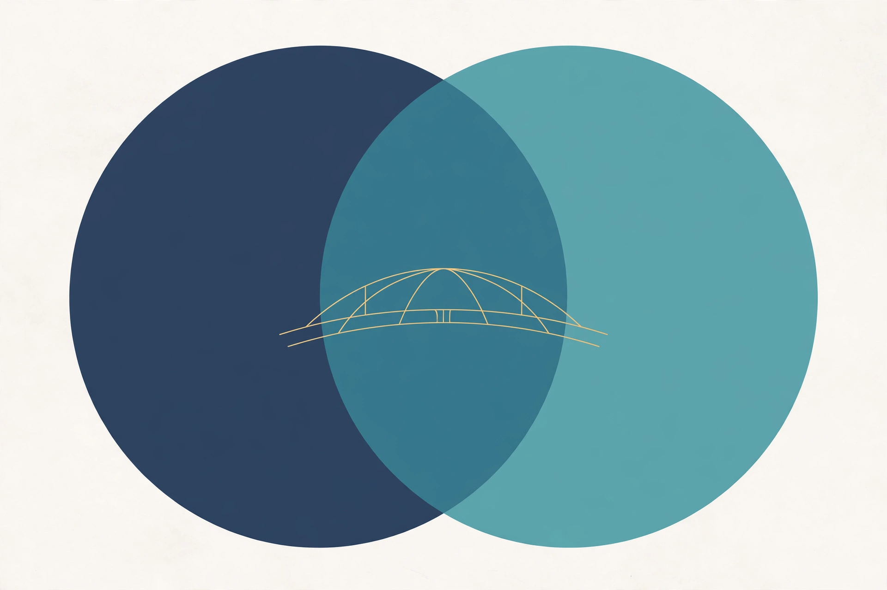
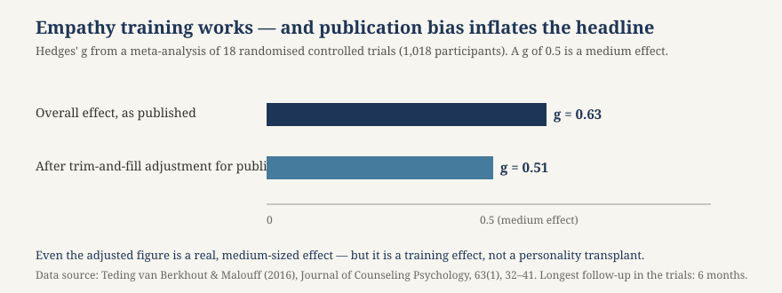

Article 52 · Empathic.X · AGI Future Foundation
Empathy Is a Skill, Not a Trait
Ask ten people what empathy is and you will get ten answers that disagree with each other in ways that matter.
What psychology says about how empathy works — and how it is learned
Empathic.X (W3 Series 2) — long-form article 2 of 3

Illustration (generated image, not a photograph): two circles meeting across a gap — a picture of perspective-taking, not of a working system.
Ask ten people what empathy is and you will get ten answers that disagree with each other in ways that matter. One will say it is feeling what someone else feels. Another will say it is understanding what someone else thinks. A third will say it is caring enough to help. A fourth will say it is something you are born with, or not. Psychology’s answer, after decades of research, is that all of the first three are partly right and the fourth is mostly wrong. Empathy is not one thing. It is a family of related capacities that run on different brain systems, develop on different timetables, and — crucially — respond differently to training. Some parts of it can be taught, practised, and strengthened at any age. Other parts resist training, fade quickly, or tire under load. Knowing which is which is the difference between a programme that helps people understand one another and a programme that promises a personality transplant and delivers a workshop certificate.
The Foundation’s own article on Empathic.X (article-02-empathic-x.html) frames the series around a single question: where is the line between supporting human empathy and pretending to feel? This article takes the other half of that question seriously. Before a series can support empathy, it has to know what empathy is — and the science is more precise, and more humbling, than the everyday word suggests.
One word, three capacities — at least
The first thing the research does is take the word apart. Most researchers now treat empathy as a family of related but distinct capacities, and collapsing them into one word causes real confusion, in everyday conversation and in clinical settings alike. A 2024 systematic review and meta-analysis in Psychological Bulletin by Xiao Wu and colleagues distinguishes four dimensions: affective empathy, cognitive empathy, motivational empathy, and behavioural empathy. Other researchers use three: cognitive, affective, and compassionate. The labels vary; the underlying split does not.
Cognitive empathy is the ability to understand what another person is thinking or feeling — to take their perspective — without necessarily sharing it. It is largely a deliberate, intellectual process: modelling someone else’s beliefs, intentions, and situation, and predicting how they will react. A therapist tracking a client’s unspoken assumptions is using cognitive empathy. So is a teacher who senses why a student has checked out, or a negotiator anticipating an opponent’s next move. It is closely related to theory of mind, the capacity to attribute mental states to others, which emerges in children around the age of three to four.
Affective empathy — also called emotional empathy — is the experience of actually feeling what another person feels. When someone describes something painful and you feel a pull in your own chest, that is affective empathy. It is more automatic and visceral than the cognitive kind, rooted in circuits involving the anterior insula and the anterior cingulate cortex that activate when we observe others in pain or distress. It shows up in rudimentary form in infancy, before children can talk: babies cry when they hear other babies cry, and toddlers offer comfort before they can explain why.
Compassionate empathy — sometimes called motivational empathy — is the third piece, and it is the one that matters most for action. It is not only understanding or feeling, but caring: being moved to help. A person can understand perfectly well what someone is going through and feel nothing about it. A person can also feel another’s distress acutely and freeze, overwhelmed, doing nothing. Compassion is the approach-oriented response — noticing suffering and moving toward it with the intention to help — rather than distress-sharing alone. The distinction, drawn sharply by Tania Singer and Olga Klimecki in 2014, turns out to be one of the most practically important findings in the field, because the two states have different consequences: empathic distress burns people out, while compassion sustains them. More on that below.
Behavioural empathy is the fourth dimension in the Wu review: the empathetic actions themselves — what a person actually does. It is the dimension most visible to the other person, and, as the training evidence shows, one of the most trainable.
The practical point of the split is that a person can be strong in one capacity and weak in another, and a programme that trains one may do nothing for the others. The classic demonstration comes from personality research: people with psychopathic traits often have intact cognitive empathy — they can read other people very well, which is part of what makes them effective manipulators — alongside blunted affective empathy. They understand; they do not feel. Conversely, a person with high affective empathy can be overwhelmed by another’s distress and unable to think clearly enough to help. “More empathy” is not a single dial to turn up. It is a dashboard, and the question is always: more of which kind, for whom, and to what end?
Two systems in the brain
The split is not only conceptual. It is visible in the brain. A 2018 review by Sabine Herpertz in the neurobiological literature describes cognitive and emotional empathy as independent facets, assigned to different brain networks, expressed differently between individuals, and dissociable by damage or disorder.
Affective empathy runs on older, faster circuitry: premotor regions, areas of the sensorimotor cortex, the inferior parietal lobule, and the anterior insula. These are the systems involved in mirroring — when you watch someone smile or wince, neurons fire in a pattern that mirrors what you would experience yourself — and in processing bodily states and painful stimuli. The anterior cingulate cortex and the anterior insula activate both when you experience pain and when you watch another person in pain. Your brain treats another’s suffering, in part, as if it were your own.
Cognitive empathy runs on phylogenetically younger, slower circuitry: midline structures such as the medial prefrontal cortex, the superior temporal sulcus, the posterior cingulum and precuneus, and the temporoparietal junction. These are the regions involved in reasoning, perspective-taking, and theory of mind — the deliberate work of modelling another mind. They develop later, they decline with normal ageing, and they are the systems most responsive to deliberate practice.
The dissociation matters clinically. Herpertz notes that psychopaths have undisturbed cognitive empathic capabilities and are principally able to recognise and apply moral values, but confer little attentional importance on them when they compete with their own goals. People with borderline personality disorder, by contrast, show impairments in cognitive empathy. The same word, “empathy,” covers deficits that point in opposite directions — which is why a single empathy score, of the kind a product might proudly display, is close to meaningless without saying which capacity it measures.
There is a related caution about measurement. Much empathy research relies on self-report questionnaires, such as the Interpersonal Reactivity Index, which asks people how much they agree with statements about perspective-taking, empathic concern, and personal distress. Self-report is cheap and scalable, and it is also exactly the kind of measure most vulnerable to wishful thinking: people who have just completed an empathy workshop reliably report that they are now more empathic. Objective measures — behavioural tests, observer ratings, physiological responses — tell a more sober story. In the meta-analysis discussed below, studies using objective measures rather than self-report found larger effects, which is encouraging; but the gap between what people say about their empathy and what they do remains the field’s central measurement problem, and any series that claims to improve empathy should be judged on behaviour, not on questionnaires.
Born with the wiring, built by experience
Empathy is both inherited and learned, but the balance tips heavily toward learning. Twin studies estimate that genetics account for roughly 28 percent of the variation in empathy between people, leaving about 72 percent shaped by environment, upbringing, and personal experience — a figure reported in secondary summaries of a large genome-wide study, and best read as an order of magnitude rather than a precise accounting. The brain comes pre-wired with hardware that supports empathy: the mirroring systems, the insula, the prefrontal regions described above. But the capacity a child is born with is closer to potential than ability — raw circuitry waiting to be configured by experience. The brain’s plasticity, its ability to rewire itself through experience, means that empathic ability is highly responsive to environment, at every age.
Childhood is where the configuration happens first, and parenting style is one of the strongest environmental predictors. Children raised in households where emotions are named, validated, and responded to compassionately tend to develop stronger empathic skills. Children raised by warm, responsive parents who also set clear behavioural expectations tend to develop stronger empathy than children raised in more permissive or more authoritarian homes. The mechanism is visible in ordinary moments: when a parent says “How do you think your friend felt when you took that toy?” instead of simply punishing the behaviour, they are exercising the child’s cognitive empathy like a muscle. Naming the feeling, imagining the other child’s perspective, and connecting the action to its effect on another person — that is perspective-taking practice, and it works because the child is doing the cognitive work, not being told the answer.
There is an important caveat. A child’s innate temperament interacts with parenting in ways that are not always intuitive. Children with highly inhibited temperaments — naturally shy, cautious, easily overwhelmed — did not benefit from authoritative parenting in the same way as their less inhibited peers. The lesson generalises: there is no single empathy curriculum that works for everyone, and a programme that ignores temperament, culture, and baseline will help some people and miss others. That is as true for adults as for children.
The developmental timetable also matters for expectations. Affective empathy is present in rudimentary form from infancy — emotional contagion, the reflexive sharing of feeling. Cognitive empathy emerges around age three to four with theory of mind, and it keeps developing through childhood and adolescence as the prefrontal cortex matures. Compassion, the motivational piece, builds on both: it requires noticing suffering, understanding its cause well enough to act wisely, and having the emotional regulation to approach rather than withdraw. Each layer depends on the ones beneath it, and each can be strengthened — or neglected — independently.
Can it be trained? Yes — with honest limits
The question that matters for any series that wants to work in this domain is whether empathy can be taught to adults, not just nurtured in children. Two meta-analyses, eight years apart, give the best available answer, and they agree on the shape of it: yes, with a medium effect, and with the gains concentrated in the capacities that are most trainable.
The first is a 2016 meta-analysis by Emily Teding van Berkhout and John Malouff in the Journal of Counseling Psychology, covering 18 randomised controlled trials of empathy training with a total of 1,018 participants. After excluding one outlier study with a very large effect and few participants, the programmes were effective overall, with a medium effect (Hedges’ g = 0.63), adjusted to 0.51 after trim-and-fill evaluation for estimated publication bias. Four factors were associated with larger effects: training health professionals and university students rather than other groups; compensating trainees for their participation; using empathy measures that focus exclusively on understanding the emotions of others, feeling those emotions, or commenting accurately on them; and using objective measures rather than self-report. The number of hours of training was not significantly associated with effect size, and the longest follow-up in the trials was six months — so the durability of the gains beyond half a year is, strictly, unknown from this literature.
The second is a larger and more searching 2024 systematic review and meta-analysis by Xiao Wu and colleagues in Psychological Bulletin, encompassing 110 eligible studies. It categorised training methods into three approaches — subject-oriented, object-oriented, and socially oriented — and examined their effects on the four dimensions of empathy separately. The results are the most useful single finding in this article, because they show how uneven training effects are. Training produced small and unsustainable effects on affective empathy; moderate but unsustainable effects on cognitive empathy; small and sustainable effects on motivational empathy; and moderate and sustainable effects on behavioural empathy. The effects on composite empathy were robust but decreased over time. Among the three approaches, socially oriented approaches — those aiming to improve social relationships — were the most effective in improving all dimensions of empathy. Subject-oriented and object-oriented approaches were effective only in improving cognitive and composite empathy.
Read those two results together and a clear picture emerges. The parts of empathy that are most trainable are the deliberate ones: perspective-taking, the motivation to care, and the behaviour of acting empathically. The part that resists training is the visceral one: feeling what another person feels. You can teach someone to take another’s perspective, to notice suffering, and to act kindly — and those gains, especially the behavioural ones, can last. You cannot reliably teach someone to feel another’s pain more deeply, and the attempt to do so may be beside the point: what the other person experiences is the behaviour, not the feeling behind it. A programme that promises to make people feel more is selling the wrong outcome. A programme that teaches people to understand better, care more steadily, and act more kindly is selling the outcome the evidence supports.

Chart: empathy training works — and publication bias inflates the headline. Hedges’ g from Teding van Berkhout & Malouff (2016), 18 randomised controlled trials, 1,018 participants. Even the adjusted figure is a real, medium-sized effect. Data source: Journal of Counseling Psychology, 63(1), 32–41. Longest follow-up in the trials: 6 months.
The socially oriented finding deserves emphasis, because it points to how training should be designed. The most effective approaches were not solitary exercises — not reading about empathy, not practising alone — but approaches aimed at improving social relationships: structured interaction, guided conversation, role-play with feedback, collaborative work. Empathy is learned between people, not in a person’s head. A machine that isolates a learner with a screen and a quiz is working against the evidence. A machine that structures a real conversation between two people, slows it down, prompts perspective-taking at the right moment, and gives feedback on what actually happened — that is a design the evidence would recognise.
Compassion is not the same as empathy — and the difference saves careers
The most consequential distinction in the field is the one between empathic distress and compassion. When you feel another person’s suffering as your own distress — the tight chest, the urge to look away, the overwhelm — that is empathic distress. It is a form of affective empathy, and it is aversive: it motivates withdrawal, not help. When you notice suffering and feel warmth, concern, and the motivation to help — an approach-oriented care response — that is compassion. The two feel different, they run on different neural systems, and they have opposite consequences for the person doing the feeling.
Tania Singer’s ReSource Project, a large-scale longitudinal study at the Max Planck Institute, tested this directly. Over nine months, two cohorts of 80 participants each underwent a structured curriculum of three three-month training modules — presence (attention and mindfulness), affect (loving-kindness and compassion), and perspective (perspective-taking of self and others) — and were tested before and after each module with a behavioural and brain-imaging paradigm called EmpaToM. Preliminary analysis showed a differential increase in perspective-taking performance after the perspective module compared with the affective module, and a more generalised increase in compassion across both. The design matters: compassion and perspective-taking were trained separately, and they improved separately, confirming that they are distinct, trainable skills rather than one general “empathy” that rises and falls as a whole.
Why does this matter beyond the laboratory? Because empathic distress is what burns out the people whose jobs require them to care. Nurses, doctors, social workers, teachers, and carers who feel their patients’ and clients’ suffering as their own distress are at risk of compassion fatigue — a term that is, strictly, a misnomer, since what fatigues them is empathic distress, not compassion. Compassion training, by contrast, has been shown in intervention studies to increase compassion for self and others, reduce emotional suppression and worry, strengthen altruistic behaviour, and alter neural responses to suffering in the direction of approach rather than withdrawal. Short-term compassion training increases prosocial behaviour, and the ReSource findings suggest the effect is not a vague “feeling nicer” but a specific, trainable shift from distress-sharing to care.
For a series called Empathic.X, this is the single most important design insight in the psychology literature. A system that amplifies empathic distress — that immerses a user in another person’s suffering without regulation, without distance, without a path to action — will harm the user and help no one. A system that cultivates compassion — noticing suffering, understanding it, regulating one’s own response, and acting — is doing the work that sustains carers rather than consuming them. The difference is not in the intensity of feeling. It is in the direction: toward the other person with help, or away from them in overwhelm.
Where training fails — and why that is useful information
A programme that only reports its successes is not a programme; it is an advertisement. The empathy-training literature is unusually honest about its limits, and the limits are instructive.
First, effects fade. In the Wu meta-analysis, the effects on affective and cognitive empathy were unsustainable — they diminished over time — and even the composite effect decreased over time. In the Teding van Berkhout and Malouff meta-analysis, the longest follow-up was six months, so durability beyond that is unknown. Empathy training is more like physical exercise than like a vaccination: stop practising and the gains decay. Any series that offers a one-off empathy module and claims a lasting change is claiming something the evidence does not support. Sustained practice, embedded in real relationships and real work, is the only form the durable effect takes.
Second, empathy is biased, and training does not automatically fix the bias. People empathise more readily with those they perceive as similar to themselves — same group, same culture, same team — and less readily with outsiders. This in-group bias is one of the most replicated findings in social psychology, and it is a standing challenge for any programme that claims to build empathy in general. A training that makes people kinder to their own team while leaving their attitudes to outsiders untouched has succeeded at team-building and failed at empathy. The socially oriented approaches that performed best in the Wu review are, at least in principle, the ones most capable of crossing group lines, because they involve real interaction with real other people rather than imagined exercises. But crossing lines has to be designed in; it does not happen by accident.
Third, empathy can be used badly. Cognitive empathy — the ability to read another person — is a tool, and like any tool it can serve manipulation as readily as care. The psychopathy dissociation is the sharpest version of this: intact perspective-taking in the service of exploitation. A series that trains perspective-taking without training compassion alongside it is building a skill that can be weaponised. The pairing matters: perspective-taking plus compassion is the combination that helps; perspective-taking alone is morally neutral and practically dangerous.
Fourth, measurement remains the weak point. Self-report measures dominate the literature because they are cheap, and they are exactly the measures most likely to flatter a programme. Objective measures — behavioural tasks, observer ratings, physiological responses — are harder and rarer, and they are the ones a serious series should use. The Teding van Berkhout and Malouff finding that objective measures were associated with larger effects is reassuring, but it does not remove the obligation: if Empathic.X ever claims to improve empathy, it should publish behavioural evidence, with follow-up, and with the null results included.
Fifth, and most plainly, no training makes a machine empathic. Everything in this article is about human beings learning. A machine can structure practice, prompt perspective-taking, give feedback, and create the conditions for two people to understand each other better. It cannot itself possess the capacities described here, and a programme that confuses the scaffolding for the skill — that calls a chatbot “empathic” because it was trained on empathy exercises — has made a category error that the psychology literature would not survive contact with.
A developmental timeline
| Age / stage | What develops | What it means for training |
|---|---|---|
| Infancy | Affective empathy in rudimentary form: emotional contagion, mirroring, distress at another’s distress | The wiring is present early; it is potential, not skill |
| Age 3–4 | Cognitive empathy emerges with theory of mind; children begin to model others’ beliefs and intentions | Perspective-taking can be practised from here on; naming feelings helps |
| Childhood | Both systems strengthen through parenting, play, and social interaction; warm, responsive parenting with clear expectations predicts stronger empathy | The strongest lever is the environment, not the child alone |
| Adolescence | Prefrontal systems mature; cognitive empathy deepens; peer relationships become the main training ground | Socially oriented practice matters most at this stage |
| Adulthood | Cognitive, motivational, and behavioural empathy remain trainable; affective empathy is harder to change | Train perspective-taking, compassion, and action — not feeling |
| Older age | Cognitive empathy regions decline with normal ageing; affective empathy is comparatively preserved | Design for the capacities that remain, and for the wisdom that experience brings |
Table: developmental timetable drawn from the sources cited in this article. Ages are approximate; individual variation is large.
What this means for Empathic.X
Empathic.X is a proposed series with no product, no programme, and no users — and that is, again, an advantage. It can design from the evidence rather than retrofitting a product to it. Here is what the psychology says the design should look like.
Train the trainable. The series should focus on cognitive empathy (perspective-taking), motivational empathy (compassion), and behavioural empathy (kind action) — the dimensions the evidence says can be improved, with effects that can last when practice is sustained. It should not promise to deepen affective empathy, the dimension the evidence says resists training. A programme that promises the wrong outcome will be measured against it and found wanting.
Train compassion alongside perspective-taking. The two are distinct skills, they improve separately, and perspective-taking without compassion can be used to manipulate. The ReSource design — separate modules for compassion and for perspective-taking — is the model to copy. And the compassion training should be framed correctly: not as feeling more distress, but as regulating distress and moving toward help. That is the version that sustains carers instead of burning them out.
Make it social. The most effective training approaches in the largest meta-analysis were socially oriented: structured interaction between real people. A series in this domain should build tools that structure real conversations — guided perspective-taking exercises, facilitated dialogue, feedback on what actually happened in an interaction — rather than solitary content. The machine is the scaffolding; the learning happens between people.
Measure behaviour, not questionnaires. If the series ever claims to improve empathy, it should measure what people do: observer-rated behaviour, behavioural tasks, and follow-up months later. Self-report alone is not evidence, and a single post-workshop survey is not a result.
Design for the bias. Empathy training that only strengthens in-group feeling has failed. The series should design explicitly for crossing group lines — structured contact with people different from the learner, perspective-taking exercises that involve out-group members, and measurement that checks whether the gains generalise beyond the familiar.
Never claim the machine feels. This article is about human learning. A machine that structures empathy practice is a tool, like a textbook or a facilitator’s guide. Calling it empathic confuses the instrument with the capacity, and it invites users to trust the machine’s judgement about people in ways the evidence does not support. The Foundation’s own line — supporting human empathy rather than simulating it — is the right one, and the psychology gives it a precise meaning: build the scaffolding, measure the behaviour, and leave the feeling to the humans.
Empathic.X’s place in the Foundation’s programme is, in this light, a cross-cutting one. Its neighbours in Intelligence & Mind — Cognition.X (Series 1), which depends on a teacher noticing when a student is lost, and InfoGurus (Series 33), which depends on knowing what a person actually needs — both depend on the capacities described here. A series that understood empathy as a set of trainable skills could serve them both, not by claiming to feel, but by building the exercises, the structure, and the measurement that help people understand one another better. That is a programme worth funding by donation and grant to the Foundation — a filed nonprofit, with no claim of tax-deductibility until an IRS determination letter exists, and no offer of securities anywhere in it.
Glossary
Affective empathy — Feeling what another person feels; emotional resonance. Present in rudimentary form from infancy; rooted in the anterior insula and anterior cingulate cortex; the dimension least responsive to training.
Cognitive empathy — Understanding what another person thinks or feels; perspective-taking. Rooted in the medial prefrontal cortex and temporoparietal junction; emerges around age 3–4; the dimension most responsive to deliberate practice.
Compassionate (motivational) empathy — Caring enough to help; an approach-oriented response to suffering, distinct from sharing distress. Trainable, with small and sustainable effects in meta-analysis.
Behavioural empathy — Empathetic actions: what a person actually does. Moderate and sustainable training effects in the Wu et al. meta-analysis.
Empathic distress — Feeling another’s suffering as one’s own distress; aversive, motivates withdrawal, and is a driver of burnout in caring professions. Distinct from compassion.
Theory of mind — The capacity to attribute mental states — beliefs, intentions, desires — to others. Closely related to cognitive empathy.
Frequently asked questions
Can empathy be learned?
Yes, in part. Meta-analyses find that empathy training works, with a medium effect overall (g = 0.63, adjusted to 0.51 for publication bias, in 18 randomised controlled trials). But the effects are uneven: perspective-taking, compassion, and empathetic behaviour improve; the visceral feeling of another’s emotions is much harder to change, and gains fade without sustained practice.
Are some people just born without empathy?
No, not in the simple sense. Genetics account for roughly a quarter of the variation between people, according to twin-study summaries; the rest is environment, upbringing, and experience. The brain comes with the wiring; whether it becomes skill depends on practice. Some conditions, such as psychopathy, involve a specific dissociation — intact cognitive empathy with blunted affective empathy — rather than an absence of all empathy.
What is the difference between empathy and compassion?
Empathy is understanding or sharing what another person feels. Compassion is noticing suffering and being moved to help. Feeling another’s distress as your own (empathic distress) can overwhelm and cause withdrawal; compassion is approach-oriented and sustains carers. They are distinct, separately trainable skills.
Does Empathic.X have a product?
No. Empathic.X is a proposed W3 Series 2, not formed, funded, or offered. Its anchored world at 47.440, −179.350 has a published fabric but does not render fully, because its assets are not hosted. This article is research about the psychology the series would work with, not a description of something that exists.
How can I support this work?
Through donations and grants to the AGI Future Foundation, the filed California nonprofit that stewards the series. Donations are not claimed to be tax-deductible, because no IRS 501(c)(3) determination letter is on file. Contact x@agifuturefoundation.org.
References
- Wu, X., Yao, S.-C., Lu, X.-J., Zhou, Y.-Q., Kong, Y.-Z., & Hu, L. (2024). Categories of Training to Improve Empathy: A Systematic Review and Meta-Analysis. Psychological Bulletin, 150(10), 1237–1260. https://doi.org/10.1037/bul0000453
- Teding van Berkhout, E., & Malouff, J. M. (2016). The efficacy of empathy training: A meta-analysis of randomized controlled trials. Journal of Counseling Psychology, 63(1), 32–41. https://psycnet.apa.org/record/2015-32537-001
- Herpertz, S. C. (2018). Empathy and personality disorders from a neurobiological perspective. Forensische Psychiatrie, Psychologie, Kriminologie, 12(3), 192–198. https://psycnet.apa.org/record/2018-39742-003
- Singer, T., & Klimecki, O. M. (2014). Empathy and compassion. Current Biology, 24(18), R875–R878.
- Trautwein, F.-M., Kanske, P., Böckler, A., & Singer, T. (2014). Training compassion and cognitive perspective taking separately: First evidence for differential mental training effects (ReSource Project). Max Planck Institute for Human Cognitive and Brain Sciences. https://pure.mpg.de/pubman/item/item_2331986
- Neurolaunch (summary of the cognitive vs affective empathy literature, including the neural basis and developmental timeline). https://neurolaunch.com/empathy-definition-psychology/
- Science Insights (summary of twin-study heritability estimates for empathy). https://scienceinsights.org/is-empathy-learned/
- AGI Future Foundation. Empathic.X — Empathy, Emotional Understanding, and Human-Centred Interaction (Article 02). https://www.agifuturefoundation.org/articles/article-02-empathic-x.html
Nothing in this article is legal, tax, or financial advice. Empathic.X is proposed, not formed, funded, or offered. The AGI Future Foundation is a California Nonprofit Public Benefit Corporation, Entity No. B20260196664, Articles filed 2026-04-24; no IRS 501(c)(3) determination letter is on file.